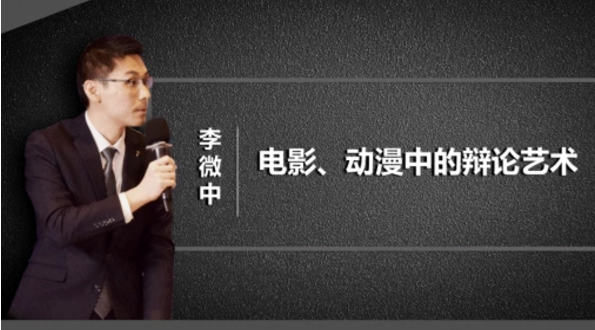
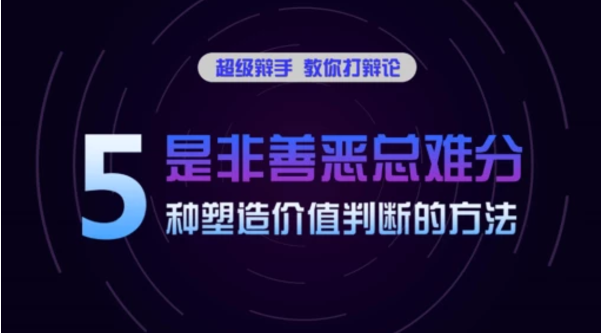
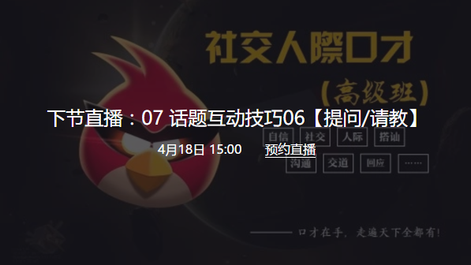

普通话基础知识讲解（一）
普通话基础知识讲解（一）
本课程讲解了人体的发音器官图和声母的难点音发音，更好的帮助同学们纠正发音，学好普通话。
小妖普通话，复韵母ia和ua
小妖普通话培训讲师，擅长纠音，普通话考试技巧
【超辩公开课】电影、动漫中的辩论艺术

辩论也是一门艺术，竞技的艺术，而艺术形式彼此之间其实是有相通之处的
【超辩公开课】分享辩论中的超级秘技

如何塑造应然的价值判断，也就是如何区分是非、好坏、善恶
社交人际沟通口才【高级班】：搭讪 演讲 说服 沟通 辩论 幽默

我就是我，个性的烟火，我就是我，给你自信的帅哥。 专攻社交口才和逻辑口才，